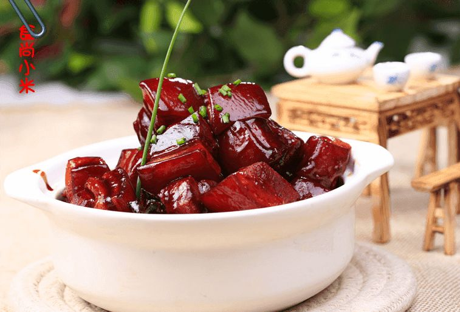

运营仪表盘
数据更新于 10-16 22:40 · 示例数据
7 天14 天30 天
累计账号2,418近 7 天 +86
家庭数1,037平均 2.6 人 / 家
近 7 天活跃家庭412较上周 +6%
近 7 天做饭记录3,206其中单菜直做 41%
近 7 天 AI 成本¥38.60预算 ¥100 / 周 · 39%
14 天趋势
做饭记录
活跃成员
10-0310-09 周四10-16


本周最常做的菜去公共菜谱库 →
 1
滑蛋虾仁
318 个家庭 · 做了 402 次
+96 家加入
1
滑蛋虾仁
318 个家庭 · 做了 402 次
+96 家加入
 2
清蒸鲈鱼
141 个家庭 · 做了 158 次
+63 家加入
2
清蒸鲈鱼
141 个家庭 · 做了 158 次
+63 家加入
 3
蒜蓉西兰花
130 个家庭 · 做了 151 次
+22 家加入
红烧肉
97 个家庭 · 做了 104 次
+35 家加入
3
蒜蓉西兰花
130 个家庭 · 做了 151 次
+22 家加入
红烧肉
97 个家庭 · 做了 104 次
+35 家加入
1234
可乐鸡翅
122 个家庭 · 做了 139 次
+41 家加入

5